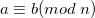
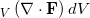

It appears that my quest for finding the
perfect Latex plugin for my blog will never end. Today, however, I've installed a plugin that may just prove to be the last one.
It's called
WP-QuickLatex, by
Pavel Holoborodko. Like all the other plugins I've used, this one contacts a remote server with the equation in text and gets the image which is then embedded into the HTML generated by Wordpress for the post. However, it has one important advantage: the server is Pavel's own
quicklatex.com, and besides returning the image, it also returns a recommended vertical alignment for the image, so that incorporating it into text will produce good-looking, aligned results, whether it's a small and simple formula like  or something large and vertically complex like , which isn't always a case for other plugins.
It will be hard for me to find bad examples as I've switched all my blog's rendering to WP-Quicklatex, but Pavel explains the difference in more detail on
his page.
I wish the other Latex-providing servers would follow suit - it costs almost nothing and will help generating better looking mathematical posts for everyone. In any case, Pavel is actively developing his plugin and is gladly responding to feature and bug requests, so WP-Quicklatex definitely looks like the best plugin for math-savvy WP bloggers at the moment.